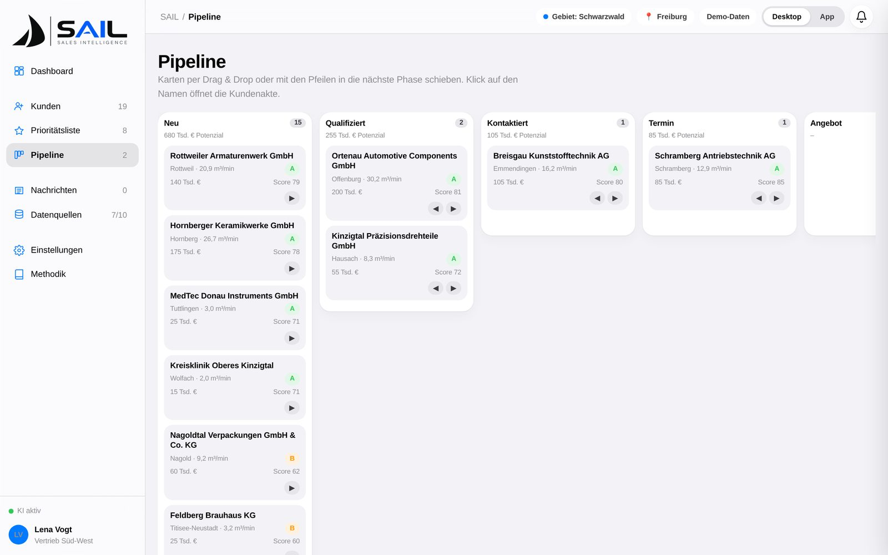

From a company name to a prepared visit.
Vom Firmennamen zum vorbereiteten Besuch.
SAIL is a sales intelligence workspace for industrial field sales. It replaces address lists, manual research and gut feeling with an automated, explainable workflow.
SAIL ist ein Sales-Intelligence-Arbeitsplatz für den industriellen Außendienst. Er ersetzt Adresslisten, manuelle Recherche und Bauchgefühl durch einen automatischen, erklärbaren Workflow.

What happens when you add a company
Was passiert, wenn Sie ein Unternehmen hinzufügen
Capture
Erfassen
Manual entry, Excel/CSV import with column mapping, or territory search by city + radius / postcode. Existing accounts are recognised and merged.
Manuelle Eingabe, Excel/CSV-Import mit Spaltenzuordnung oder Gebietssuche per Stadt + Radius / PLZ. Bestehende Kunden werden erkannt und zusammengeführt.
Enrich
Anreichern
AI reads the website, registers, press, tenders and company databases, extracts industry, products, headcount, sites, contacts and buying signals – each with a source and a confidence.
KI liest Website, Register, Presse, Ausschreibungen und Firmendatenbanken und extrahiert Branche, Produkte, Mitarbeiter, Standorte, Ansprechpartner und Kaufsignale – jeweils mit Quelle und Konfidenz.
Infer demand
Bedarf ableiten
Our proprietary inference model derives average, peak and installation demand from industry, production share, vertical integration and shifts. Its weights are calibrated per customer on your installed base and verified sites.
Unser eigenentwickeltes Inferenzmodell leitet Mittel-, Spitzen- und Installationsbedarf aus Branche, Produktionsanteil, Fertigungstiefe und Schichten ab. Seine Gewichte werden kundenspezifisch auf Ihren Bestandsanlagen und verifizierten Standorten kalibriert.
Prioritise
Priorisieren
Score 0–100 from six dimensions, class A/B/C, travel time from your location, live news, pipeline stage and an AI briefing for the visit.
Score 0–100 aus sechs Dimensionen, Klasse A/B/C, Fahrzeit vom Standort, Live-Nachrichten, Pipeline-Phase und KI-Briefing für den Besuch.
From public features to demand – calibrated to you.
Von öffentlichen Merkmalen zum Bedarf – auf Sie kalibriert.
Our proprietary inference model turns the features gathered during enrichment into average, peak and installation demand. Its weights are calibrated per customer on installed base, service history and verified sites – and every correction from the field flows back in.
Unser eigenentwickeltes Inferenzmodell übersetzt die bei der Anreicherung gesammelten Merkmale in Mittel-, Spitzen- und Installationsbedarf. Seine Gewichte werden je Kunde auf Bestandsanlagen, Servicehistorie und verifizierten Standorten kalibriert – und jede Korrektur aus dem Feld fließt zurück.
Everything in one workspace
Alles an einem Ort
Territory search
Gebietssuche
City + radius, postcode ranges, industry and minimum headcount. Suggestions are ranked before you even add them.
Stadt + Radius, PLZ-Bereiche, Branche und Mindest-Mitarbeiterzahl. Vorschläge sind bereits priorisiert, bevor Sie sie übernehmen.
Excel import & export
Excel-Import & -Export
Drop your existing lists; get the enriched, scored list back as a workbook for colleagues who live in Excel.
Bestehende Listen ablegen; die angereicherte, bewertete Liste als Arbeitsmappe zurückbekommen – für Kollegen, die in Excel leben.
Account record
Kundenakte
Profile, enrichment, economics, news, demand & score, contacts and an “ask SAIL” tab – one page per company.
Profil, Anreicherung, Wirtschaft, Nachrichten, Bedarf & Score, Ansprechpartner und ein „SAIL fragen“-Tab – eine Seite pro Unternehmen.
Economic outlook
Wirtschaftliche Prognose
Revenue indication, growth, credit class and a three-year forecast per company, derived from industry cycles and signals.
Umsatzindikation, Wachstum, Bonität und eine Dreijahresprognose je Unternehmen, abgeleitet aus Branchenkonjunktur und Signalen.
Live news monitoring
Live-Nachrichtenmonitoring
Press, registers and tender portals watched for every account; notifications with a reader, linked to the record, one click into the score.
Presse, Register und Ausschreibungsportale für jeden Kunden beobachtet; Benachrichtigungen mit Leseansicht, verknüpft mit der Akte, per Klick in den Score.
Decision makers
Entscheider
Plant manager, energy manager, procurement – with phone, e-mail and LinkedIn where publicly available.
Werksleiter, Energiemanager, Einkauf – mit Telefon, E-Mail und LinkedIn, soweit öffentlich verfügbar.
Travel time & routing
Fahrzeit & Route
Choose where you are; SAIL shows drive time per account and opens the route in Google Maps.
Standort wählen; SAIL zeigt die Fahrzeit je Kunde und öffnet die Route in Google Maps.
Pipeline
Pipeline
New → qualified → contacted → meeting → offer → won/lost, with potential in € per stage. Syncs to your CRM.
Neu → Qualifiziert → Kontaktiert → Termin → Angebot → Gewonnen/Verloren, mit Potenzial in € je Phase. Sync ins CRM.
Data sources overview
Datenquellen-Übersicht
Status, last sync and coverage for every source – public and your own – so you always know what the score rests on.
Status, letzter Abgleich und Abdeckung je Quelle – öffentlich und intern – damit immer klar ist, worauf der Score beruht.

The score, explained
Der Score, erklärt
Six dimensions, calibrated weights, visible facts. We calibrate the weights to your product and customer base – and the whole territory re-ranks instantly.
Sechs Dimensionen, kalibrierte Gewichte, sichtbare Fakten. Wir kalibrieren die Gewichte auf Ihr Produkt und Ihren Kundenstamm – das ganze Gebiet wird sofort neu sortiert.
- 30 Demand – installation demand inferred by the modelBedarf – vom Modell abgeleiteter Installationsbedarf
- 25 Buying signals – expansions, projects, hires, tendersKaufsignale – Erweiterungen, Projekte, Einstellungen, Ausschreibungen
- 20 Installed base – competitor fleet and its ageBestandssituation – Wettbewerbsanlage und deren Alter
- 10 Financial outlook – growth and credit classWirtschaftlichkeit – Wachstum und Bonität
- 8 Reachability – travel time, known contactErreichbarkeit – Fahrzeit, bekannter Ansprechpartner
- 7 Data quality – sources and confidenceDatenqualität – Quellen und Konfidenz
Fits into what you already run
Passt in das, was Sie bereits betreiben
CRM
Two-way sync of accounts, contacts and pipeline stages with Salesforce, Microsoft Dynamics, HubSpot and SAP CX. Other systems via API or scheduled Excel exchange.
Bidirektionaler Abgleich von Kunden, Kontakten und Pipeline-Phasen mit Salesforce, Microsoft Dynamics, HubSpot und SAP CX. Andere Systeme per API oder geplantem Excel-Austausch.
Your own data
Ihre eigenen Daten
Installed base, service history, price lists and product series are connected as internal sources and never leave your tenant.
Bestandsanlagen, Servicehistorie, Preislisten und Produktreihen werden als interne Quellen angebunden und verlassen Ihren Mandanten nie.
Compliance
Compliance
EU hosting, GDPR data-processing agreement, role-based access, audit log. AI models run without training on your data.
EU-Hosting, Auftragsverarbeitungsvertrag nach DSGVO, rollenbasierte Zugriffe, Audit-Log. KI-Modelle trainieren nicht auf Ihren Daten.
Want to see it on real companies?
Wollen Sie es an echten Unternehmen sehen?
We'll run SAIL on a territory of your choice and show the results live.
Wir lassen SAIL auf einem Gebiet Ihrer Wahl laufen und zeigen die Ergebnisse live.